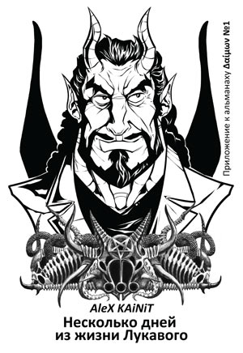

Оглавление «Δαίμων» №1
(краткое см. здесь)
 Δαὶμων №1 (альманах). — Древний Город: Black Fire Pandemonium, 2012 — 592 стр. (+ приложение)
Δαὶμων №1 (альманах). — Древний Город: Black Fire Pandemonium, 2012 — 592 стр. (+ приложение)
Первый номер ставит своей целью обозначить «направления» альманаха.
В начале номера даётся пояснение термину «δαὶμων» — что под этим понимается, почему выбрано именно такое название для альманаха: статьи V.L.S.L.V. «Встреча с Даймоном», «Книга Даймона», «Воин Тьмы, или Пламенное Сердце Даймона», «Чёрное Пламя: Пентакль Пути Великой Нави», «Апология Тьмы» с оккультной точки зрения, а с философской и психологической точки зрения — Warrax, «Περὶ Δαμονος πραγματεα».
«Дитя Тьмы Изначалья, Чёрная Звезда из Сонма Равных, Я — Даймон, низошедший в пределы плоти из Беспредельности НЕРОЖДЁННОГО, и Чёрное Пламя, составляющее Моё существо, пылает внутрь, призывая готовых вступить на Путь Возврата».
«…в описании “сатанист — это демон в теле человека” акцент не на “одержимости”, а на соответствии своему настоящему “Я”, Тьме-в-себе. Δα?μων здесь — это часть ψυχη, микрокосм в индивиде, осуществляющий взаимодействие с макрокосмом. Суть своего “Я”, самость (если по Юнгу) и т.д. Также δα?μων — это “точка опоры” трансцендентальной функции, именно поэтому он “работает” тогда, когда Личность сформирована в достаточной степени».
Две большие статьи посвящены проблемам современного оккультизма.
Работа De.S., Trux «Тёмные культы: проверка на вирусы сознания» подробно разбирается вредоносные мемы околорелигиозного восприятия, широко распространённые в настоящем среди тех, кто причисляет себя к Тёмным культам.
«Тёмные культы взращивали в адептах черты, препятствующие достижению реальных, хоть сколько-то ощутимых результатов: доходящую до фобии мизантропию; приверженность оторванной от жизни метафизике, в которой слова обращаются к другим словам и множатся в виде пафосных текстов и воззваний, призывающих к чему-то, но не дающих никакого конкретного руководства к действию; эксапистскую интроверсию в мир красивых, но по факту бесполезных образов, которые якобы открывают “бездну знаний Ада”, но оставляют адепта всё таким же немощным в отношении реального, не вымышленного им мира. Эти черты трудно считать результатом сознательного выбора, они заражают сознание подобно паразитам. Мы пришли к ситуации, когда Тёмная система взглядов стала Тёмной верой, ещё одним культом, который как питательную среду используют для своего размножения паразитарные религиозные идеи. В таком виде её ждёт судьба прочих сект, “ересей” и местечковых культов, державшихся лишь на энтузиазме первых последователей: эту веру ждёт либо бесславный финал забвения, либо же она окончательно вольётся в “авраамический поток” в виде небольшого чёрного ручейка…».
Вторая статья: Out «Left Hand Path, lost and found», раскрывает тему претензий тех, кто называет себя «левопутистами» в русскоязычном интернете. Эта статья с предыдущей наглядно показывает удручающее состояние современного Тёмного оккульта и т.п. (если смотреть на всех, кто себя так называет).
«…ПЛР как максимум может претендовать на такой готический нью-эйдж. С множеством характерных для нью-эйджа подходов (эклектика, адаптация практик под свою жизнь), ценностей (акцентуация на личности и индивидуальном развитии, отсутствие требований к кандидату на причастность, исключая “правильное мышление”, и так далее) и общей поверхностностью понимания духовного мира человека.
Понимания, которое осталось потеряно за нонконформизмом и выяснением отношений с иллюзией бога, засевшего в теме благодаря тому, что многое в ней было инспирировано довлеющей ролью христианства в западной мистике».
Третья и последняя в этом номере альманаха большая работа: Руслан Хазарзар, «Скептический взгляд на диалектический материализм». На первый взгляд, тема для оккультного сборника странная, но на самом деле — очень важная. Дело в том, что имеет место стандартное человеческое кидание в дихотомию: либо «за духовность, наука — фигня», либо сциентизм «если наука чего не знает, то этого нет». Это очень обширный вопрос, в работе Хазарзара обсуждается частный случай: абсурдность материализма (на всякий случай: это не значит, что идеализм верен, т.н. “основной вопрос философии” — полная ерунда, что также затрагивается в статье). Разбираются вопросы предопределённости и случайности, неправомерность термина «объективная реальность» и многое другое. Статья хорошо излечивает от вредоносного наследия диамата, и рекомендуется всем оккультистам и учёным. Да, пожалуй, вообще всем.
«…никакого объекта без субъекта быть не может, и постулирование независимости объекта от субъекта есть не что иное, как абсурд. Диалектический материализм вынужден, познавая предмет познания, говорить, что познает объект — «объект», который вне философии тождества лишен какого бы то ни было смысла. В этом и заключается наше утверждение, что диалектический материализм более абсурден, нежели гегелизм с его философией тождеств».
Два переводных текста.
Не раз приходилось слышать, что ЛаВей сплагиатил «Сила есть Право»; в его статье «Сила есть Право» он сам пишет об этой теме.
«Книга меня вдохновила, и этого достаточно. Авторские права, даже с учетом обновлений, все равно бы истекли некоторое время назад, так что отрывки стали частью “Сатанинской библии”… Первые несколько изданий на странице посвящения было написано: “Рагнару Редбёрду, чья Сила есть Право”».
Второй переводной текст: А. О. Лэп, «Один сатанизм или много». Разбирается тема «кого можно называть сатанистом» в общем виде, без указания «самого верного определения». Проблема «кто только не называет себя сатанистом» актуальна не только в России…
«Чтобы ответить на вопрос, какое определение сатанизма лучше, необходимо оценить степень противоречивости и ясности концепций. Если определение не описывает концепцию, отличную от других концепций, как в случае со слишком широким определением, это определение бесполезно или, в лучшем случае, неадекватно. Если в определении присутствуют исключающие друг друга конструкции, то концепция ничего не проясняет».
Сергей Телегин написал отличную работу «Алхимия Чёрного Солнца», очень подробно раскрывающую тему.
«Для обыкновенного человека столкновение с Чёрным Солнцем влечет за собой разложение сознания, растворение упорядоченной личности, погружение в инфернальную тьму бессознательного и мистическую смерть в ритуале посвящения. Столкновение с Чёрным Солнцем означает для человека появление “невероятного”, “невозможного” в переживаемом опыте телесно-духовной трансмутации. Этот мистический опыт расположен в самом сердце алхимического процесса. В лучах Чёрного Солнца темнота арктической ночи становится осознанной, превращается в индивидуальный инициационный опыт. Чёрное Солнце сияет чёрными лучами. Это алхимическая стадия черноты внутри черноты».
К сожалению, алхимия изначально была заражена белосветным взглядом и авраамическими религиозными вкраплениями (хотя и в относительно меньшей степени, чем многие другие направления Западного оккультизма), поэтому статья Телегина сопровождается пояснительным текстом: Warrax «Дистилляция свинца».
«Оккультизм Западной традиции сейчас представляет собой первичный свинец с большим количеством ядовитых примесей. Дистилляция свинца — очень трудный процесс, невозможный при обычных условиях, но он должен быть реализован; без этого Западный оккультизм — не меткая пуля, поражающая цель, а всего лишь ядовитая, тяжеловесная вещь, которой легко причинить себе вред, но очень трудно приспособить к полезному делу».
Тему отношения к Воле в философском и отчасти психологическом ракурсе раскрывает Uner в работе «Волюнтаризм и Телема» (не ограничиваясь лишь Телемой, затрагивая и другие восприятия, в частности — сатанизм).
«Воля Сатаны не может быть вещью-в-себе, поскольку она — проявление, а не начальный объект. Тем самым ещё раз утверждается отсутствие в мировоззрении сатаниста этих “вещей-в-себе”, то есть абсолютных величин, то есть божественного».
Предисловие к книге «Столпы Тубал Каина» О. Телемского «Да не иссякнет…» — вполне качественная отдельная статья, трактующая миф о «бодрствующих» ангелах.
«Бодрствующие Ангелы против человечества явно ничего не имели и были заинтересованы в его развитии. Ангелы, которые впоследствии были осуждены на проклятие.
Это находится в огромном противоречии с общепринятой монотеистической версией падения Сатаны, как результата гордыни, — в одном случае Сатана “захотел занять трон бога”, в другом — мусульманском — “отказался поклониться Адаму”».
Тема Black Metal настойчиво появляется в «Тёмных» журналах, альманахах, фензинах и прочем. Увы, обычно это сводится к «Arrrrrrgh!» и «ТруЪ!» в интервью с музыкантами. Мы же в статье М. Зуевой «Black metal» предлагаем ознакомиться с этим культурным феноменом на нормальном уровне, в музыкальном и психологическом аспекте одновременно.
«…обе тенденции — идейная и музыкально-визуальная — могут учитываться при характеристике исполнителей. Можно сделать еще одно предположение о критериях Black metal — по отношению музыкантов к тому, чем они занимаются, к тем силам, во имя которых живут. Black metallers, во всяком случае североевропейские, оказались очень серьезными детьми, воспринявшими антихристианскую эстетику за чистую монету (в отличие от тех же Death metal музыкантов)».
Две статьи Ратибора — «Метафизика Тьмы» и «Эссе о Тьме» — посвящены восприятию Тьмы с т.з. современного язычества. Впрочем, всё написанное верно и для не-язычника: Тьма — категория изначальная и всеобщая.
«Примечательно, что Тьмы в гносеологическом аспекте просто не существует для того, кто вследствие своей ограниченности не понимает или вследствие интеллектуальной трусости не хочет понимать наличия непознанного, кого пугает и раздражает сам факт существования чего-то, выходящего за пределы заранее предписанных истин. При этом получается картина мира, в которой всё, что не просто, то и не важно, а если действительность отличается от схемы, тем хуже для действительности».
«Когда нет слепящих бликов света, без мишуры и блёсток суть остаётся перед лицом Тьмы, открытая и обнажённая, — либо остаётся лишь пустота там, где не было ничего помимо блёсток и мишуры. Заглянуть в неё — значит распахнуть себя перед её пытливым, пронзающим взором, чтобы отразиться в ней, посмотреть в глаза своему отражению и узнать о себе сокрытую правду».
Серия небольших статей от Аконит: «Симбиоз с демоном», «Чуланы и космос», «Личностно или безличностно я воспринимаю Сатану?», «Перечитывая “Сатанинскую Библию”» и «В современном мире слишком много человека». Можно классифицировать как «путевые заметки по жизни с сатанинской точки зрения» — иногда неожиданно, иногда банально, но часто неочевидно «снаружи».
«Попытка отделить демона от человека до того, как сатанист выслужит своё на Земле и получит право на смерть, ведет к блокировке “человеческой” части личности (субъективно блокировка кажется уничтожением). Следствие блокировки — отказ от развития (“во мне этого уже нет, так чего тут развивать”). Следствие отказа от развития — стремительная деградация “человеческой” части личности до чел-овека».
«Во тьме чулана — прячутся, во Тьме космоса — ищут».
«…значение имеет лишь более общий вопрос — есть ли Сатана? И я прекрасно знаю ответ — есть».
«”СБ” необходима начинающему — точно так же, как настоящий букварь необходим ребенку, учащемуся читать и писать. Нет, конечно, теоретически учиться читать можно и по магазинным вывескам, и по обрывкам газет, и по вузовскому учебнику. Но все же по букварю гораздо удобнее».
«Запертые в бетонных камерах городов, современные люди почти полностью утратили связь со всем, что не относится к узким интересам их биологического вида».
Две связанные статьи от A. KAiNiT’а: «Понятия “Светлый” и “Светоносный”» и «Тайны древних гробниц», в который раскрыта тема «не-белосветного Света».
«Светлый не просто склонен, но и вынужден нести людям свет по своей природе. Светоносный волен нести свет по своему желанию».
«Есть Тьма динамичная, н о есть и статичная. Это принципиально разные понятия. Статичную Тьму можно назвать “тьмой чулана”. Во Тьме может находиться не только Чёрное Пламя, но и гниль с плесенью. Кроме демонов во Тьме могут обитать черви и тараканы. Обитать в статичной Тьме. В той самой Тьме, где нет Сатаны».
Kara-Mergen в небольшой, но крайне полезной работе «Основы магического мировоззрения в современном мире» пишет о том, о чём предостерегал ещё ЛаВей: не вляпайтесь в «духовные мечтания»! Оккультизм — это вовсе не метод социального эскапизма.
«…основой оптимального существования для человека, избравшего путь магии, является максимально реалистичное представление об окружающем мире и себе самом».
Поговорка «не прошло и полгода» безнадёжно устарела. Warrax в работе «Понятие эгрегора» наконец-то, более чем через десять лет, объясняет понятие, которым широко пользуется с прошлого тысячелетия.
«…говоря об эгрегоре, многие представляют, что-де есть такой объект, пусть даже и в «нематериальном тонком мире».
Пусть его нельзя пощупать, но хотя бы в виде какого-нибудь поля, скажем, “торсионного”. По той же причине — неспособность отличить действительность от реальности — многие воспринимают богов исключительно антропоморфно. Мол, есть такие личности, которым не пофиг, что мы тут делаем, надо стараться им понравиться и все такое».
Ещё один небольшой текст Warrax’а «Tenebrae Umbra» — порождение этого самого альманаха. Написался «сам» под конец вёрстки издания.
«Не могу сказать, что тут написано что-либо новое, просто небольшое дополнение к работе Ad usum externum Liber I: Тьма, Хаос, Бездна, Ад, но практическое применение для такого стиля есть: если подробные работы способствуют пониманию, то тезисно-метафорические помогают распознавать своих. Если вы понимаете всё, что я здесь написал, без дополнительных объяснений, то во многом на тему Тьмы мы мыслим сходно».
Завершают альманах художественные миниатюры, а именно: «Пьеса про сатанизмЪ» Таутеке Алайя, «Гимн Сатане» лауреата Нобелевской премии Д. Кардуччи и малоизвестные стихи известного русского учёного, предпринимавшего попытки научного исследования оккультизма, А.Л. Чижевского.
KAiNiT A., Несколько дней из жизни Лукавого / Приложение к альманаху Δαὶμων № 1. — Древний Город: Black Fire Pandemonium, 2012 — 178 стр.
Литературное приложение к альманаху — небольшая повесть на тему жизни в Аду и работе с людьми. Познавательно, жизнеутверждающе и с юмором.
— Прямо здесь тебе Премию Дарвина и напишем, — усмехнулся Лукавый, начав что-то строчить паркером в ведомости.
— А потом? — не без тревоги спросила девушка.
— А потом — в топку! — сказал Лукавый, не отрываясь от писанины.
— Что? — глаза суицидницы стали круглыми. — В топку? А, может, покаяться можно?
— Перед кем?
— Перед богом…
— А бог здесь при чём?
— Ну, ведь это по его приказу меня наказывают. За грех…
— Ты что? И вправду так решила? — засмеялся Лукавый, отложив ручку и взяв сигару. — Милая моя, протри глаза. Это же Ад! Ваш бог здесь вообще левый бобёр, и власти никакой не имеет!
— Тогда зачем же вы меня хотите жечь?
— Для обогрева, — сказал Лукавый, продолжив писать в ведомости, предварительно смахнув упавшую с кончика сигары искорку.
СКАЧАТЬ В PDF: Альманах | Приложение